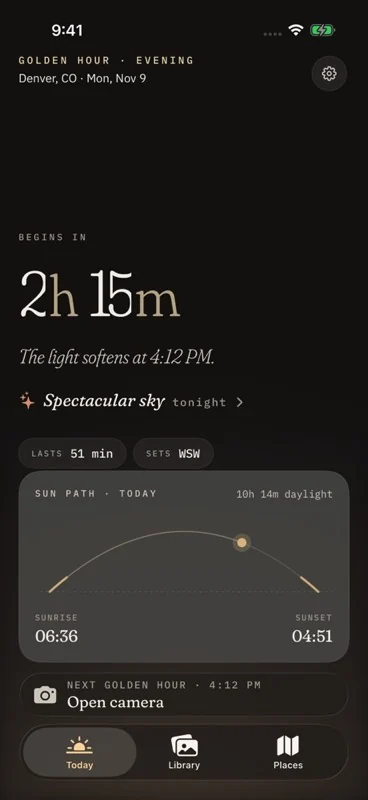
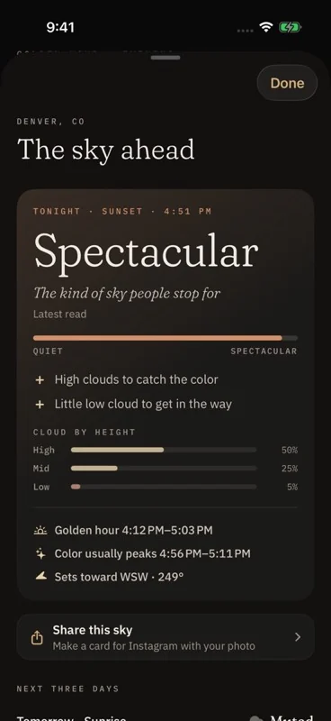
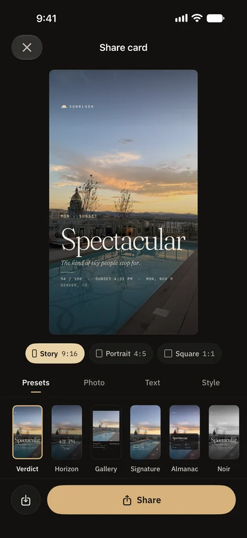

Sunset forecast for iPhone
Know if tonight's sky is worth it.
Sunblush gives every sunrise and sunset a plain verdict, from Muted to Spectacular, with the reasons behind it and how sure the forecast is. It alerts you only when the sky looks promising.
Download on the App StoreFree. For iPhone, iPad and Apple Watch.

- Muted
- Soft
- Good
- Vivid
- Spectacular
One word for every sunrise and sunset. Words first, because a percentage tells you very little.

An honest forecast
The reasons, not just a score.
Sunblush reads Apple Weather's cloud cover at low, mid and high altitude for the moment the sun meets the horizon. High cloud over an open horizon catches the color. A low cloud bank blocks it.
- A one-word verdict you can read in two seconds
- The reasons, in plain language
- A confidence label that firms up as the hour gets closer
- Afterwards, a tally of how often the forecast matched what you saw
Alerts you won't mute
Only for skies worth going out for.
Most golden hour reminders fire every evening until you switch them off. Sunblush plans a week ahead and, by default, only notifies you when the forecast is Vivid or better.
The alert says the verdict and the time. Tap it and the camera opens.
Grey evening? No alert.

Catch it, keep it, share it
One tap to the camera. A journal of every sky.
The camera keeps tonight's verdict on screen and suggests settings for the light. Each photo is saved with the sun's position, the phase of light, the weather and the place you stood.
- The Log shows your sunrises and sunsets day by day
- Atlas maps where you stood
- Monthly Recap gathers your skies, places and longest streak
- Share cards come ready-sized for Stories, portrait and square
Without opening the app
The verdict, where you already look.
Home Screen widgets
Tonight's verdict, a countdown to golden hour and the sun's path through the day.
Lock Screen widgets
The verdict and the next golden hour beside the clock.
Live Activity
A countdown on the Lock Screen and in the Dynamic Island while golden hour is on.
Siri
Ask "How's the sky in Sunblush?" and hear the verdict and the reason.
Control Center
Buttons that open the camera or the forecast.
Apple Watch
An app and complications that count down to golden hour.
Sunlight Reports · Pro
When does this place get sun?
Choose a place, the direction it faces and a date range. Sunblush works out when direct sun reaches it through the seasons and lets you sketch the buildings or trees that block it.
The result is a PDF report built on your device. Useful for a balcony, a garden or a property listing.
Reports are calculated from the sun's path under clear skies. They do not include weather. Free shows the headline figures. The full report and PDF export are part of Sunblush Pro.

Pricing
Free to use. Pro when you want more.
Sunblush
Free
- The sky verdict for the next 36 hours
- Alerts for promising skies
- Camera, Log, streaks and Monthly Recap
- Share cards
- Three saved places
- Home Screen and Lock Screen widgets
- Live Activity, Siri and Apple Watch
Sunblush Pro
Everything in free, and:
- The full three-day sky outlook
- RAW capture
- The Golden Hour widget in every size
- Unlimited saved places
- Full Sunlight Reports with PDF export
- The whole year ahead in the Light Chart
US prices. The yearly plan starts with a one-week free trial for new subscribers. Subscriptions renew until cancelled. The one-time purchase never renews.
Questions
Before you download.
How does Sunblush decide if a sky will be good?
It looks at Apple Weather's forecast for cloud at three heights, along with humidity, visibility and the chance of rain, for the minute of sunrise or sunset. High and mid cloud over a clear horizon tends to light up. Thick low cloud or full overcast tends to block the light. The verdict is worked out on your device.
How accurate is it?
It is a likelihood, not a promise. Clouds can move in the last half hour and no forecast catches that every time. Sunblush shows how sure it is, updates as the hour approaches, and afterwards keeps a tally of how often its forecast matched what you told it you saw.
Will it notify me every day?
No. By default you only hear from Sunblush when a sunrise or sunset is forecast Vivid or Spectacular. You can change that in Settings, choose sunrise, sunset or both, and set how early the alert arrives.
Does it work for sunrise too?
Yes. Every sunrise and sunset gets its own verdict.
What does it cost?
Sunblush is free to download and use. Sunblush Pro is $2.99 a month, $14.99 a year with a one-week free trial, or $39.99 once. Prices are for the United States.
What happens to my location and photos?
There is no account. Your photos stay on your device unless you share them. Your location is used on your device to work out sun times, and its coordinates are sent to Apple Weather to fetch the forecast. Sunblush has no server of its own and uses no advertising or analytics software. The privacy policy has the detail.
Which devices does it run on?
iPhone and iPad with iOS 18 or later, and Apple Watch with watchOS 10 or later. At launch Sunblush is available on the App Store in the United States.
How do I cancel a subscription?
Open Settings on your iPhone, tap your name, then Subscriptions, then Sunblush Pro. If you cancel during the free trial you are not charged.